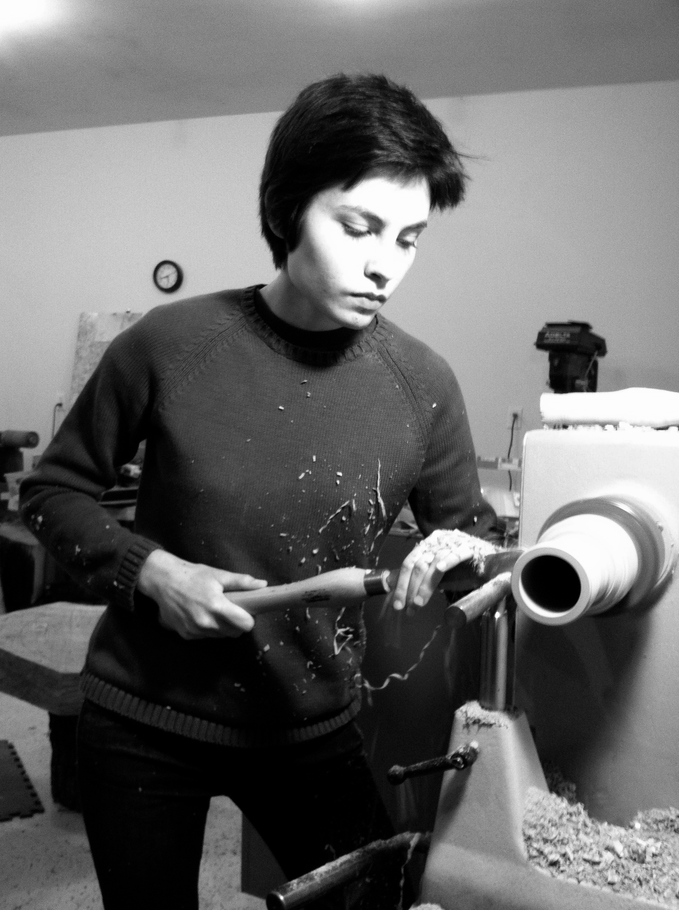

Nan Pincus is a woodworker and storyteller based in Pittsboro, North Carolina. Nan's work focuses on honoring found materials and amplifying the narrative already embodied in the wood. Like a pocket, Nan's work is small-scale, functional, and surprisingly intimate.
